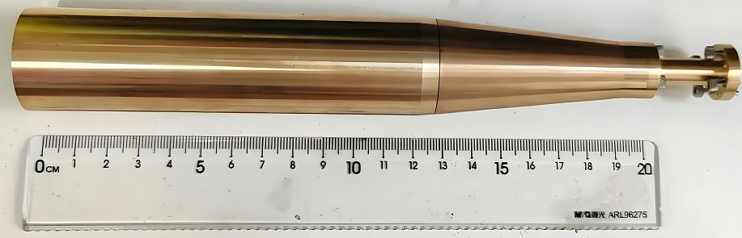

supplier of custom sub-mm & THz wave leaky-wave antennas, terahertz waveguide cavities precision processing! manufacture of millimeterwave horn antennas or submillimeterwave corrugated horn antennas, MMWV mmwaveguides!
Precision Manufactured Terahertz, Sub‑mm & mm‑Wave Antennas – Made to Your Drawings


As a dedicated manufacturer of high‑frequency antennas, we specialize in producing custom terahertz (THz), sub‑millimeter wave, and millimeter wave antennas strictly according to customer drawings. every antenna is machined using conventional high‑precision CNC equipment, followed by copper underplating and gold plating – the proven industrial standard for low loss and reliable performance.
Our core competence lies in transforming your mechanical designs into physically robust, electrically superior antennas. We routinely fabricate several classical antenna types across the 0.1–5 THz range:


Leaky‑wave antennas – frequency‑scanning solutions where the beam direction changes with frequency, perfectly suited for automotive radar and security scanners.
Horn antennas – the workhorse of quasi‑optical systems. We offer pyramidal horns (tapered in both E & H planes), sectoral horns (E‑plane or H‑plane for fan beams), conical horns (symmetric beams), and corrugated horns (ultra‑low sidelobes). All are machined from brass or copper, then plated with copper and finished with gold.
Slot array antennas – planar, low‑profile structures that provide narrow beams and high aperture efficiency, ideal for imaging arrays and compact radar front‑ends.


We understand that your designs may demand specific gain, beamwidth, polarization, or bandwidth. Simply send us your mechanical drawings , and we will manufacture the antennas exactly as specified – with no unsolicited modifications, no hidden process changes, and full respect for your intellectual property.
Whether you need a single prototype or a production batch of horn, slot array, or leaky‑wave antennas for terahertz imaging, sub‑mm wave spectroscopy, or millimeter‑wave communication systems, we are your ready partner. Contact us with your drawings, and let our precision machining and gold‑plating craftsmanship bring your antenna designs to life.
Standard Terahertz Gain Horn Antennas,cusom submillimeterwave Antenna radiating components
| waveguide rectangular | Freq(GHz) | typical gain(dB) | polarization | material: | plating | ||||
|---|---|---|---|---|---|---|---|---|---|
| WR1.0 | 750-1100GHz | 25dB | linear | brass | gold | ||||
| WR1.2 | 600-900GHz | 25dB | linear | brass | gold | ||||
| WR1.5 | 500-750GHz | 25dB | linear | brass | gold | ||||
| WR2.2 | 325-500GHz | 25dB | linear | brass | gold | ||||
| WR2.8 | 260-400GHz | 25dB | linear | brass | gold | ||||
| WR3.4 | 220-330GHz | 25dB | linear | brass | gold | ||||
| WR4.3 | 170-260GHz | 25dB | linear | brass | gold | ||||
| WR5.1 | 140-220GHz | 25dB | linear | brass | gold | ||||
| WR6.5 | 110-170GHz | 25dB | linear | brass | gold | ||||
| WR08 | 90-140GHz | 25dB | linear | brass | gold | ||||
| WR10 | 75-110GHz | 25dB | linear | brass | gold | ||||
Every component is produced on our precision CNC machining centers, achieving micron‑level tolerances essential for THz and sub‑mm wavelengths. The electroplating process – first a copper strike layer, then a thick gold finish – guarantees excellent surface conductivity, corrosion resistance, and solderability. No exotic coatings, no 3D‑printed polymers.
Terahertz Antenna Comparison: precision Machining (Au Plating)
| Antenna Type | Subtype | Frequency Range (GHz | Typical Gain (dBi) | Beamwidth (°) | Bandwidth | Features | |||
|---|---|---|---|---|---|---|---|---|---|
| Horn Antenna | Pyramidal horn (tapered both E & H planes) | 100 – 3000 | 15 – 25 | 10 – 30 | 10 – 20% | High gain, low VSWR, easy fabrication | |||
| Horn Antenna | Sectoral horn (E‑plane or H‑plane) | 100 – 2000 | 12 – 20 | 15 – 60 (fan beam) | 10 – 20% | Fan beam, simple one‑axis tapering | |||
| Horn Antenna | Conical horn | 100 – 5000 | 18 – 28 | 8 – 25 | 10 – 15% | Symmetrical beam, easy to polish | |||
| Horn Antenna | Corrugated horn | 100 – 1000 | 18 – 25 | 10 – 20 | 15 – 25% | Very low sidelobes, pure aperture field | |||
| Slot Array Antenna | (resonant /traveling‑wave slot array) | 100 – 1500 | 12 – 22 | 5 – 15 (narrow beam) | 5 – 15% | Planar, low profile, high efficiency | |||
| Leaky‑Wave Antenna | (periodic / uniform LWA) | 100 – 2000 | 10 – 20 | 2 – 20 (frequency‑scanned) | 10 – 30% | Frequency beam‑scanning, simple structure | |||